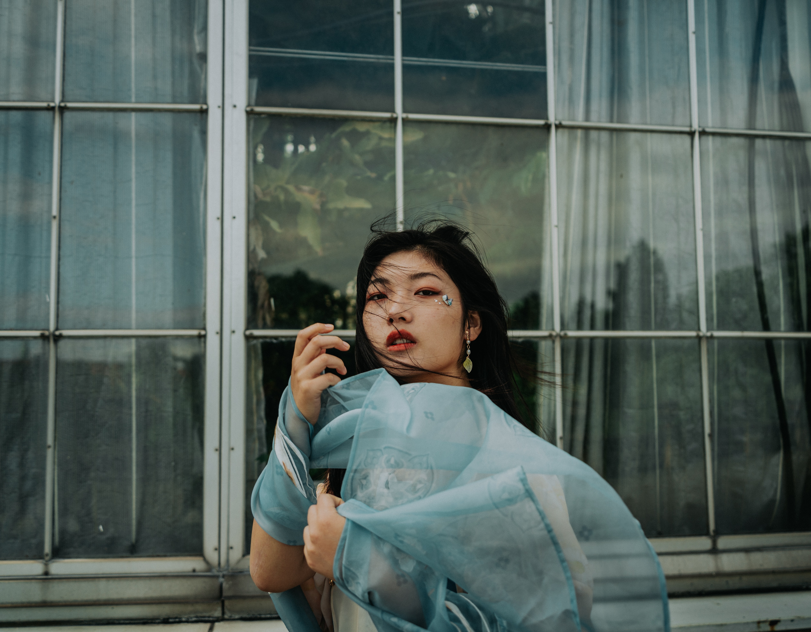

Photographing
Photographing is the art or process of producing images by the action of radiant energy and especially light on a sensitive surface (such as film or an optical sensor)To photograph is defined as to take a picture with a camera. An example of to photograph is to use a camera to take pictures at a birthday party. verb. The definition of a photograph is an image generally taken with a camera. An example of a photograph is a picture from a wedding.